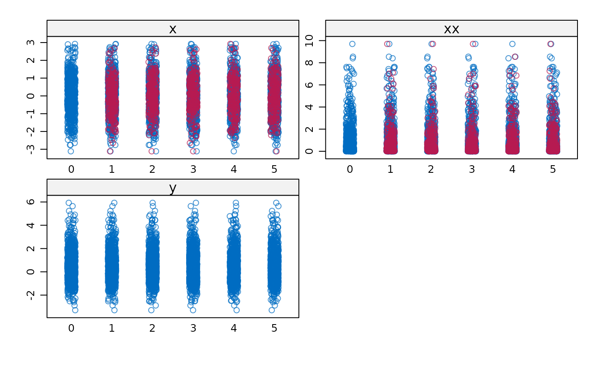

Imputation by multivariate predictive mean matching
Source:R/mice.impute.mpmm.R
mice.impute.mpmm.RdImputes multivariate incomplete data among which there are specific relations, for instance, polynomials, interactions, range restrictions and sum scores.
Details
This function implements the predictive mean matching and applies canonical regression analysis to select donors fora set of missing variables. In general, canonical regressionanalysis looks for a linear combination of covariates that predicts a linear combination of outcomes (a set of missing variables) optimally in a least-square sense (Israels, 1987). The predicted value of the linear combination of the set of missing variables would be applied to perform predictive mean matching.
Note
The function requires variables in the block have the same missingness pattern. If there are more than one missingness pattern, the function will return a warning.
See also
mice.impute.pmm
Van Buuren, S. (2018).
Flexible Imputation of Missing Data. Second Edition.
Chapman & Hall/CRC. Boca Raton, FL.
Other univariate imputation functions:
mice.impute.cart(),
mice.impute.lasso.logreg(),
mice.impute.lasso.norm(),
mice.impute.lasso.select.logreg(),
mice.impute.lasso.select.norm(),
mice.impute.lda(),
mice.impute.logreg(),
mice.impute.logreg.boot(),
mice.impute.mean(),
mice.impute.midastouch(),
mice.impute.mnar.logreg(),
mice.impute.norm(),
mice.impute.norm.boot(),
mice.impute.norm.nob(),
mice.impute.norm.predict(),
mice.impute.pmm(),
mice.impute.polr(),
mice.impute.polyreg(),
mice.impute.quadratic(),
mice.impute.rf(),
mice.impute.ri()
Examples
# simulate data
beta2 <- beta1 <- .5
x <- rnorm(1000)
e <- rnorm(1000, 0, 1)
y <- beta1 * x + beta2 * x^2 + e
dat <- data.frame(y = y, x = x, x2 = x^2)
m <- as.logical(rbinom(1000, 1, 0.25))
dat[m, c("x", "x2")] <- NA
# impute
blk <- list("y", c("x", "x2"))
meth <- c("", "mpmm")
imp <- mice(dat, blocks = blk, method = meth, print = FALSE,
m = 2, maxit = 2)
# analyse and check
summary(pool(with(imp, lm(y ~ x + x2))))
#> term estimate std.error statistic df p.value
#> 1 (Intercept) 0.03113943 0.04146686 0.7509473 38.589154 4.572395e-01
#> 2 x 0.50054117 0.03501063 14.2968326 37.065309 1.162119e-16
#> 3 x2 0.48960396 0.03097395 15.8069581 5.635635 6.971423e-06
with(dat, plot(x, x2, col = mdc(1)))
with(complete(imp), points(x[m], x2[m], col = mdc(2)))
